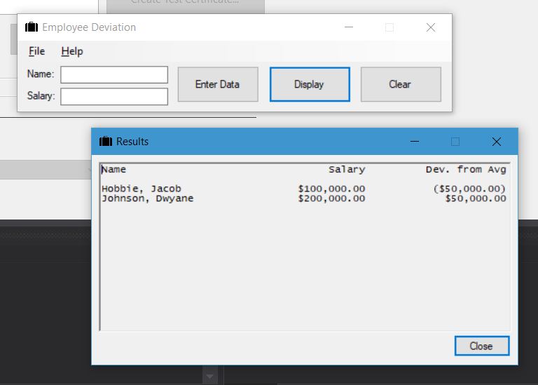
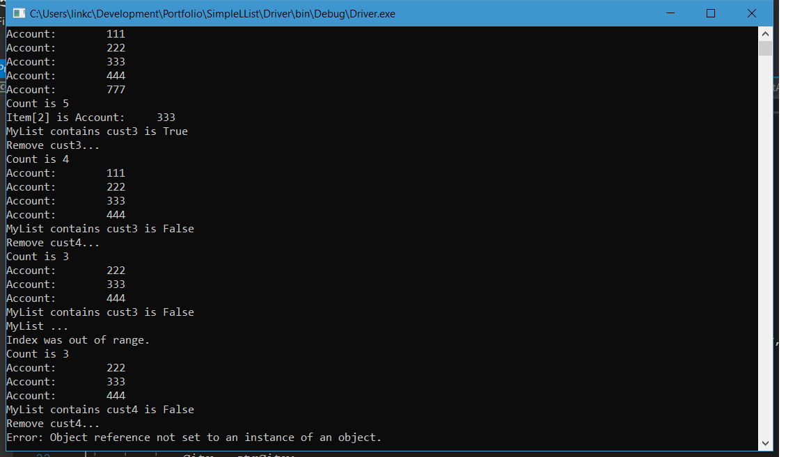

Goal 1
Use specific software to model business applications, analyze data and aid in the decision making process
Programming 1
Executable
Source Code
First off, I should say why exactly I chose this program to represent what I learned in this class. To be honest, I didn’t choose this piece, but it was recommended by my professor, because of the amount of string manipulation that was needed to fulfill the needs of the program. However, I didn’t enjoy the program at its state when graded. So I went back to it before handing it in for my artifact and bumped it up to v2. I feel this new version is a better representation of what I learned in this class overall. Not only did I learn about string manipulation, but I also learned how to correctly deal with multiple forms, and how they are just modified classes. In fact, I felt it was even more perfect as I implemented knowledge that the form is a class with the relationship between FrmMain and FrmSummary. FrmMain sends a string that is formatted to look pretty to FrmSummary. This is used directly in its constructor so no properties had to be used, which minimizes on data corruption and theft. Overall, I’m very happy with the program! In fact, my use of the link labels that are part of .NET 4.5 are probably my favorite. I now try to include a link to my website into every program I build. Or everything I do generally online, although that’s easy thanks to markdown. However, something that I will be researching over the summer is XAML. If I could restart the program entirely from the beginning, I would build the GUI using XAML, as it supports resizing better than straight C# does. The most frustrating thing I’ve done with my programs all year is build them without the ability to resize. But I had to make that decision considering the alternative is literally lose GUI elements behind the form, or end up with a gigantic ugly gray area. I did it this way for now, because I barely know how to program in XAML. This will change this summer so I can build better GUI’s for the people who use my programs. Even so, I’m glad to have worked on this program, and gave it the extra love and attention it really needed. I’m excited to see the future with Programming II, even if it will rip out my heart and soul apparently. That’s because I love this, and I’m want to push my envelope as much as I can.
Programming 2
Executable
Source Code
This is easily one of my favorite programs I've ever made in my time at Newman University. If you are a .NET developer, you may be aware of one of the handiest things added to it: The List class. The list class works like an array, however it works like an accordian: It can expand and contract. The more data you add to it, the bigger it gets, but you can also delete record from the inside at any moment by searching for the data you want to remove. The list object can then accordingly remove only the data you searched for, and continue on in the order that you had originally. It's some genius coding from the .NET team at Microsoft, and one that I believe many .NET developers are gracious for. However our teacher, Windell Hambrick, wanted us to make our own version of the List class, using a concept he taught us called nodes. You see, every single container of data within a list class is it's own object that are fused together, and sorted through a manager class, which I called NodeList in this project. NodeList manages how nodes connect to each other, and through some careful thinking and well thought out math, you can chain together a theoretically infinite amount of nodes to each other and store all kinds of data.
Now for difficulty. This is easily the most difficult program to debug so far. To finish this, I had to stay up well into the night, talking the code out to my rubber duck, and working out different solutions until around five in the morning it seemed to work out perfectly. I laughed and laughed, and my roommates came into my room concerned I had finally lost it. But I remember the joy of finishing this and figuring it out, and I expect that in the future, it will remain one of my proudest moments. For one, being able to deconstruct a .NET class is something I've always wanted to do. Second, I can see a potential use for this in a variety of future applications, and I can't wait to get cracking on them.
Web Design & Development
Fun fact: You're seeing this project right now! Now, it's most definintely changed since it's first instance, however, I have to admit, I did a bad job planning this part of my portfolio. I would have lovevd to show you my first instance of my website to see how I grew, and my first ever reflection on this, but while I still have the reflection, the code seemed to dissapear into thin air. Thanks however to the Internet Archive, I was able to find an old copy of my website. Now, it contained only the basics: All my HTML, and the first layer of CSS. Everything else was gone. So I reconstructed my website from there, improving on my first iteration, and making it into what you see today! (In all seriousness, please send a donation to the Internet Archive. They've helped me out in the making of my portfolio, and they are very important to the web's history, and being able to see where we as an internet community have come from). You can donate here.
Now, what have I learned from this exercise? For one, HTML is easy to understand, but tedious to create. Two, CSS is extremely difficult to get exactly right. Anyone who deals with CSS on a daily basis is a talented human being, with much patience. However, it is extremely fulfilling to get it right at the end. Finally, JavaScript is the most difficult language I've ever coded in. C++ was easier! However, something I've also learned in my time at Koch Industries: It's easy to say that JavaScript is bad and that instead you should learn a third-party language like React or Angular. However, in order to get ahead and create the future of web technologies, you need to learn JavaScript, and continue to learn more about it as the years go on. It is a living language, and it's our responsibility to keep learning its secrets as time goes on. However it's not just limited to JavaScript, but HTML and CSS as well. Everything changes fast in our jobs, and while it seems tedious now, the more you learn as you go, the better programmers we become, and the better solutions we create.